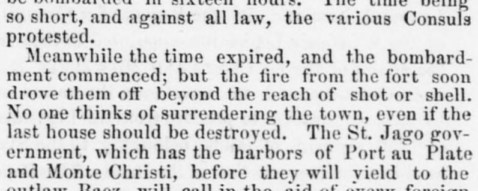
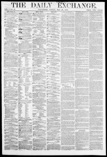

See the full pageVer la página completaJago gov ernment, which has the harbors of Port au PlateEl gobierno de Santiago, que posee los puertos de Puerto Plata
Following the expiration of a deadline, a bombardment of Port au Plate commenced, though fire from the fort forced the attackers out of range. The St. Jago government stated it would seek foreign aid before yielding to Baez, whose fleet's movements were favored by English and French consuls, leaving the United States as the sole government to depend upon. Additionally, the American schooner Wing of the Wind successfully ran the blockade with a cargo from New York on the 27th, while the U.S. Consul at St. Domingo, Mr. Elliott, remained imprisoned in his house for fear of his life without the presence of U.S. warships.Expirado el plazo otorgado, dio principio el cañoneo sobre Puerto Plata, aunque la réplica de artillería del fuerte obligó a los atacantes a retirarse fuera de tiro. El gobierno radicado en Santiago previno que antes recabaría auxilio foráneo que someterse a Báez, a cuyos buques amparaban los cónsules británico y francés, restando Estados Unidos como el único amparo confiable. Asimismo, la goleta estadounidense Wing of the Wind burló el bloqueo con cargamento de Nueva York el día 27, en tanto el cónsul norteamericano en Santo Domingo, Sr. Elliott, permanecía encerrado en su morada temiendo por su vida ante la ausencia de buques de guerra de su nación.
FULL TEXT:TRADUCCIÓN:
be bombarded in sixteen hours. The time being so short, and against all law, the various Consuls protested.ser bombardeada en dieciséis horas. Siendo el tiempo tan corto, y contra toda ley, los varios Cónsules protestaron.
Meanwhile the time expired, and the bombardment commenced; but the fire from the fort soon drove them off beyond the reach of shot or shell. No one thinks of surrendering the town, even if the last house should be destroyed. The St. Jago government, which has the harbors of Port au Plate and Monte Christi, before they will yield to the outlaw Baez, will call in the aid of every foreignEntretanto el tiempo expiró, y el bombardeo comenzó; pero el fuego del fuerte pronto los ahuyentó más allá del alcance de tiro o granada. Nadie piensa en rendir el pueblo, incluso si la última casa fuera destruida. El gobierno de Santiago, que tiene los puertos de Puerto Plata y Monte Cristi, antes de ceder ante el forajido Báez, llamará la ayuda de todo extranjero
The Daily Exchange. Baltimore, Md., May 28, 1858.
See the original at the Library of CongressVer el original en la Biblioteca del Congreso
Published by: Kerr & Co.Publicado por: Kerr & Co.
Edition: Edition 1Edición: edición 1
Page: 1Página: 1
Frequency: daily (1858–1861)Frecuencia: diario (1858–1861)
Collection: Chronicling America, Library of CongressColección: Chronicling America, de la Biblioteca del Congreso
LCCN: sn83009573LCCN: sn83009573
ISSN: 2378-0509ISSN: 2378-0509
OCLC: 9114916OCLC: 9114916
Rights: public domain, according to the Library of CongressDerechos: dominio público, según la Biblioteca del Congreso